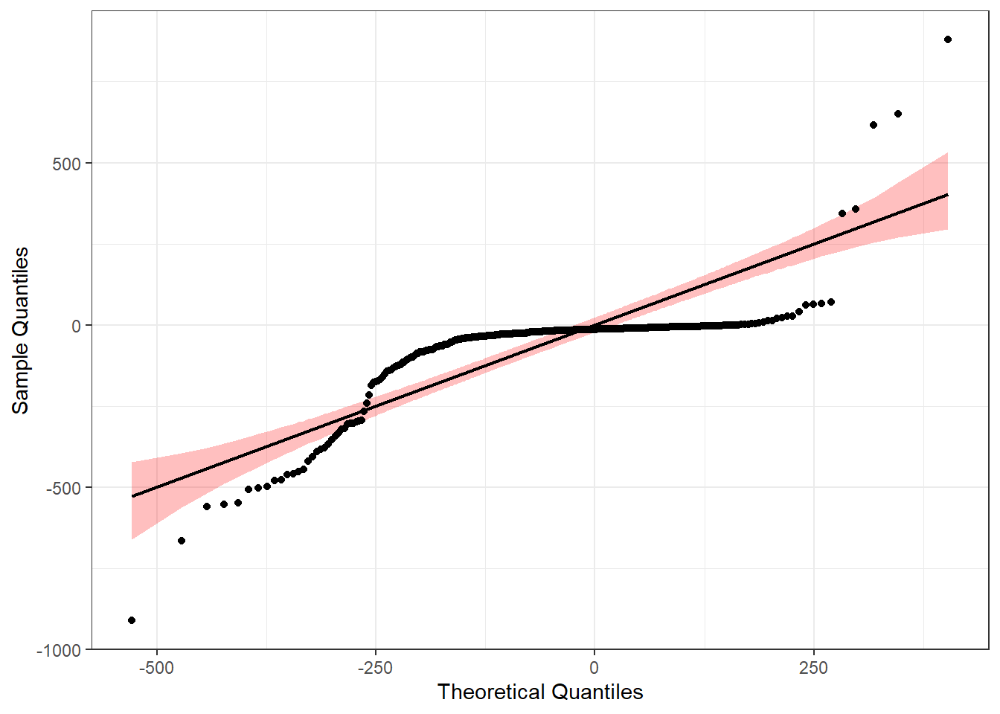

| NUTS_II | n | mean | sd | stderr | LCL | UCL | median | min | max | IQR |
|---|---|---|---|---|---|---|---|---|---|---|
| Norte | 86 | 198.2 | 566.78 | 61.12 | 76.68 | 319.72 | 36 | 3 | 4650 | 123.0 |
| Área Metropolitana de Lisboa | 18 | 988.0 | 2112.63 | 497.95 | -62.58 | 2038.58 | 391 | 52 | 9240 | 552.5 |

We intend to compare the North and Lisbon regions regarding the number of physicians. Please indicate, justifying, what inferential statistical methodologies would be appropriate for this purpose? Name the hypothesis tests used, comment on and interpret the results.
| NUTS_II | n | mean | sd | stderr | LCL | UCL | median | min | max | IQR |
|---|---|---|---|---|---|---|---|---|---|---|
| Norte | 86 | 198.2 | 566.78 | 61.12 | 76.68 | 319.72 | 36 | 3 | 4650 | 123.0 |
| Área Metropolitana de Lisboa | 18 | 988.0 | 2112.63 | 497.95 | -62.58 | 2038.58 | 391 | 52 | 9240 | 552.5 |
First, we need to test for assumptions: Normal distribuition in each group, and homogeneity of variances
Starting with Shapiro-Wilk to test for normality:
NL_BD %>%
group_by(NUTS_II) %>%
summarise(`W Statistic` = round(shapiro.test(Médicos)$statistic,2),
`p-value` = shapiro.test(Médicos)$p.value) %>%
kbl(format = "markdown")| NUTS_II | W Statistic | p-value |
|---|---|---|
| Norte | 0.34 | 0e+00 |
| Área Metropolitana de Lisboa | 0.43 | 2e-07 |
Both p-values are <0.05, meaning we reject the null hypothesis, so this data is not normally distributed We then need to do a non-parametric test: Mann-Whitney U
Before that, and for the sake of practice, lets test for homogeneity of variances
lev1<-leveneTest(Médicos ~ NUTS_II, data=NL_BD)
print(lev1) Levene's Test for Homogeneity of Variance (center = median)
Df F value Pr(>F)
group 1 6.42 0.01281 *
102
---
Signif. codes: 0 '***' 0.001 '**' 0.01 '*' 0.05 '.' 0.1 ' ' 1we get a p-value of 0.01281, meaning we reject the null hypothesis, so between group variances are unequal
# moving on to the Mann whitney U test
mann_whitney <- wilcox.test(Médicos ~ NUTS_II, data=NL_BD, na.rm=TRUE, paired=FALSE, exact=FALSE, conf.int=TRUE)
mann_whitney
Wilcoxon rank sum test with continuity correction
data: Médicos by NUTS_II
W = 233, p-value = 3.405e-06
alternative hypothesis: true location shift is not equal to 0
95 percent confidence interval:
-507.0001 -131.9999
sample estimates:
difference in location
-229.0001 We get a p-value of 3.405e-06, meaning we reject the null hypothesis that distributions are equal and conclude that there is a significant difference in the number of doctors of both regions.
A researcher argues that there are statistically significant differences between the average values per county for the number of physicians and the number of nurses in Portugal. Do you agree with the researcher’s statement? Identify the appropriate statistical methodologies to apply, comment and interpret the results.
BD <- BD %>%
mutate(diff = Médicos - Enfermeiros)| n | mean | sd | stderr | LCL | UCL | median | min | max | IQR |
|---|---|---|---|---|---|---|---|---|---|
| 308 | 163.11 | 667.68 | 38.04 | 88.26 | 237.96 | 24.5 | 0 | 9240 | 79 |
| n | mean | sd | stderr | LCL | UCL | median | min | max | IQR |
|---|---|---|---|---|---|---|---|---|---|
| 308 | 225.6 | 694.28 | 39.56 | 147.76 | 303.44 | 48.5 | 0 | 9507 | 121 |

Shapiro-Wilk normality test
data: BD$diff
W = 0.64009, p-value < 2.2e-16With a p-value of <2.2e-16, we reject the null hypothesis and conclude that the difference between groups is not normally distributed.
Since we rejected normality, we must perform a non parametric test: Wilcoxon test
wilcox <- wilcox.test(BD$Médicos, BD$Enfermeiros,na.rm=TRUE, paired=TRUE, exact=FALSE, conf.int=TRUE)
wilcox #p-value <2.2e-16, we reject the null hypothesis
Wilcoxon signed rank test with continuity correction
data: BD$Médicos and BD$Enfermeiros
V = 3513.5, p-value < 2.2e-16
alternative hypothesis: true location shift is not equal to 0
95 percent confidence interval:
-36.49999 -23.00001
sample estimates:
(pseudo)median
-28.0001 With a p-value of <2.2e-16, we reject the null hypothesis and conclude that there is a statistically significant difference between the number of physicians and the number of nurses.
You want to compare all regions regarding the number of physicians. Please indicate, justifying, which inferential statistical methodologies would be appropriate for this purpose? Name the hypothesis tests used, comment and interpret the results.
| NUTS_II | n | mean | sd | stderr | LCL | UCL | median | min | max | IQR |
|---|---|---|---|---|---|---|---|---|---|---|
| Ilhas | 30 | 57.93 | 145.38 | 26.54 | 3.65 | 112.21 | 9.0 | 0 | 719 | 35.75 |
| Norte | 86 | 198.20 | 566.78 | 61.12 | 76.68 | 319.72 | 36.0 | 3 | 4650 | 123.00 |
| Centro | 100 | 99.75 | 429.94 | 42.99 | 14.45 | 185.05 | 21.5 | 1 | 4239 | 46.75 |
| Área Metropolitana de Lisboa | 18 | 988.00 | 2112.63 | 497.95 | -62.58 | 2038.58 | 391.0 | 52 | 9240 | 552.50 |
| Alentejo | 58 | 34.67 | 73.08 | 9.60 | 15.45 | 53.89 | 11.0 | 1 | 436 | 20.00 |
| Algarve | 16 | 105.38 | 155.87 | 38.97 | 22.32 | 188.44 | 56.0 | 4 | 600 | 82.50 |
Since we want to compare multiple groups, we want to perform an ANOVA test or Kruskall-Wallis First, we need to test for assumptions: Normal distribuition in each group; Homogeneity of variances
Starting with Shapiro-Wilk to test for normality
Med_BD %>%
group_by(NUTS_II) %>%
summarise(`W Statistic` = round(shapiro.test(Médicos)$statistic,2),
`p-value` = shapiro.test(Médicos)$p.value) %>%
kbl(format = "markdown")| NUTS_II | W Statistic | p-value |
|---|---|---|
| Ilhas | 0.42 | 0.00e+00 |
| Norte | 0.34 | 0.00e+00 |
| Centro | 0.18 | 0.00e+00 |
| Área Metropolitana de Lisboa | 0.43 | 2.00e-07 |
| Alentejo | 0.44 | 0.00e+00 |
| Algarve | 0.65 | 4.75e-05 |
All of them present a p-value <0.05,we reject the null hypothesis, and conclude that this data is not normally distributed. We then need to do a non-parametric test: Kruskal-Wallis, but before that, and for the sake of practice, lets test for homogeneity of variances
lev2<-leveneTest(Médicos ~ NUTS_II, data=Med_BD)
print(lev2)Levene's Test for Homogeneity of Variance (center = median)
Df F value Pr(>F)
group 5 5.1171 0.0001606 ***
302
---
Signif. codes: 0 '***' 0.001 '**' 0.01 '*' 0.05 '.' 0.1 ' ' 1We get a p-value of 0.0001606, meaning we reject the null hypothesis, so between group variances are unequal.
Let’s finally move onto the test we want:
m1<-kruskal.test(Médicos ~ NUTS_II, data=Med_BD)
print(m1)
Kruskal-Wallis rank sum test
data: Médicos by NUTS_II
Kruskal-Wallis chi-squared = 60.044, df = 5, p-value = 1.19e-11With a p-value of 1.19e-11,we reject the null hypothesis, and conclude that there are differences in median values between groups
We must then move onto post-hoc analysis:
#Dunn's Kruskal-Wallis post-hoc test
posthocs1<-dunnTest(Médicos ~ NUTS_II, data=Med_BD, method="holm")
print(posthocs1)Dunn (1964) Kruskal-Wallis multiple comparison p-values adjusted with the Holm method. Comparison Z P.unadj P.adj
1 Alentejo - Algarve -2.7553672 5.862630e-03 4.690104e-02
2 Alentejo - Área Metropolitana de Lisboa -6.7366767 1.620502e-11 2.430753e-10
3 Algarve - Área Metropolitana de Lisboa -3.0255107 2.482136e-03 2.233923e-02
4 Alentejo - Centro -2.5284374 1.145715e-02 6.874291e-02
5 Algarve - Centro 1.3398184 1.803044e-01 5.409131e-01
6 Área Metropolitana de Lisboa - Centro 5.4691014 4.523229e-08 5.880198e-07
7 Alentejo - Ilhas 0.1618548 8.714202e-01 8.714202e-01
8 Algarve - Ilhas 2.6309885 8.513692e-03 5.959584e-02
9 Área Metropolitana de Lisboa - Ilhas 6.2185578 5.017452e-10 7.024433e-09
10 Centro - Ilhas 2.1795854 2.928821e-02 1.464410e-01
11 Alentejo - Norte -4.1954090 2.723796e-05 2.996176e-04
12 Algarve - Norte 0.2395993 8.106409e-01 1.000000e+00
13 Área Metropolitana de Lisboa - Norte 4.2622906 2.023421e-05 2.428105e-04
14 Centro - Norte -2.0094802 4.448624e-02 1.779449e-01
15 Ilhas - Norte -3.5334718 4.101399e-04 4.101399e-03#Dwass, Steel, Critchlow, Fligner post-hoc test
posthocs2<-dscfAllPairsTest(Médicos ~ NUTS_II, data=Med_BD)
print(posthocs2)
Pairwise comparisons using Dwass-Steele-Critchlow-Fligner all-pairs testdata: Médicos by NUTS_II Ilhas Norte Centro
Norte 0.00724 - -
Centro 0.18305 0.27392 -
Área Metropolitana de Lisboa 4.2e-06 4.9e-05 1.3e-07
Alentejo 0.99671 0.00032 0.05966
Algarve 0.12605 0.99993 0.68129
Área Metropolitana de Lisboa Alentejo
Norte - -
Centro - -
Área Metropolitana de Lisboa - -
Alentejo 3.1e-08 -
Algarve 0.00285 0.04508
P value adjustment method: single-step